Convocation 2006
Lake Shrine from Temple Grounds
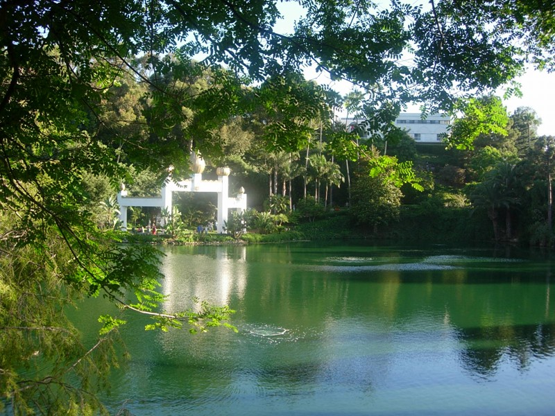
 Flowers
at Lake Shrine
Flowers
at Lake Shrine
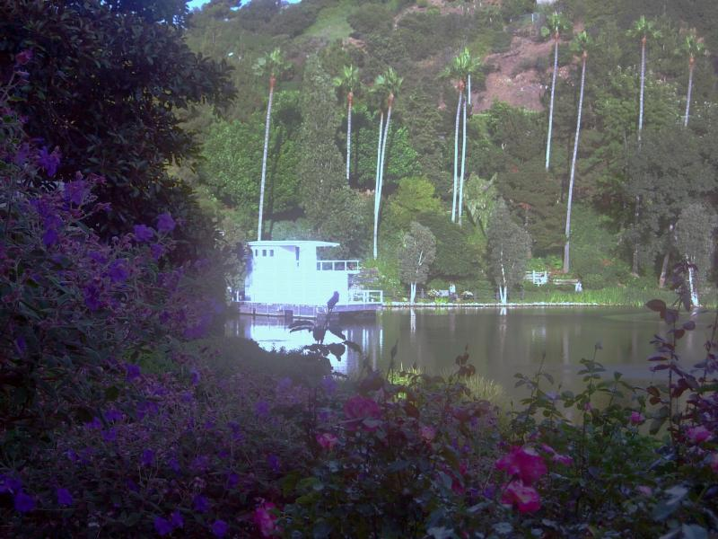
Houseboat where Guruji stayed while directing the construction
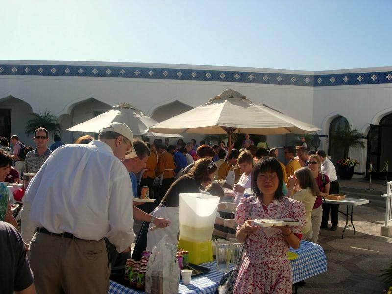
Jing at the Center Rep's meeting, Lake Shrine Temple grounds
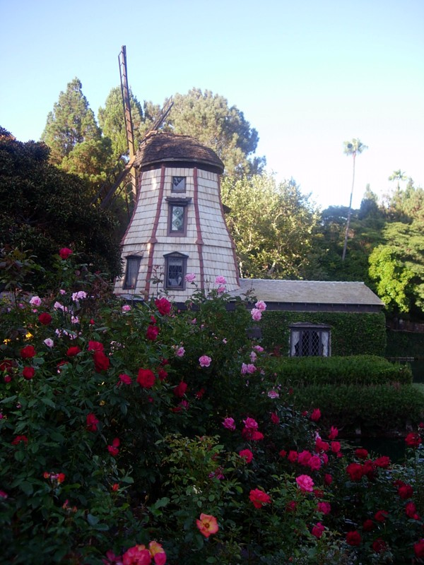
Windmill - Lake Shrine
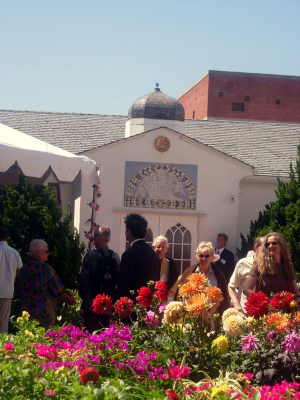
Hollywood Temple grounds
 Front
of Hollywood Temple
Front
of Hollywood Temple
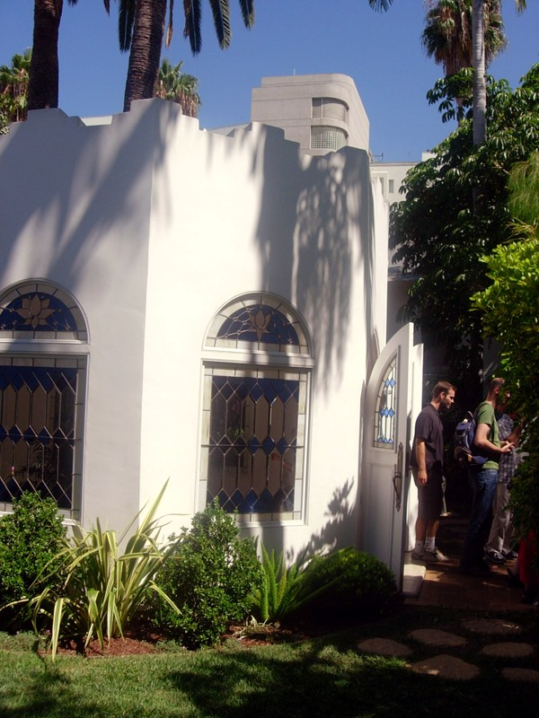
Mandir at Hollywood Temple - Exterior
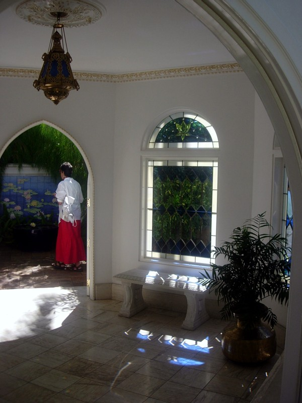
Mandir at Hollywood Temple - Interior
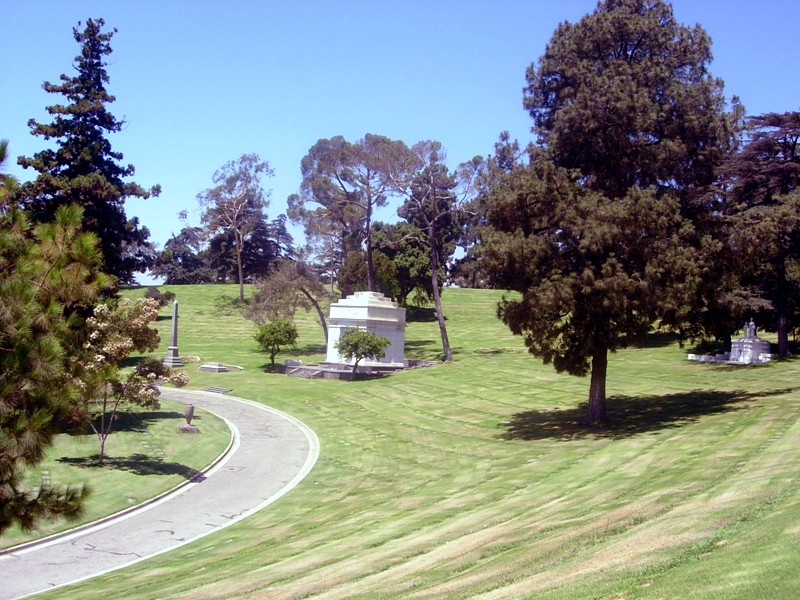

Chapel of the Recession, where the crypt is located
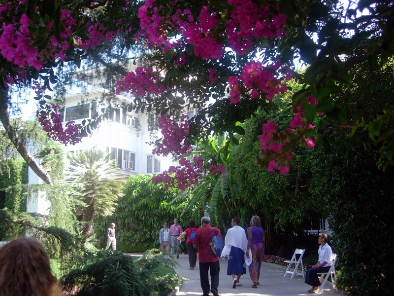
Administration Building - Mother Center

Wishing Well Mandir - Mother Center
Guruji and Gyanamata's handprints and sayings are in the cement of the well.
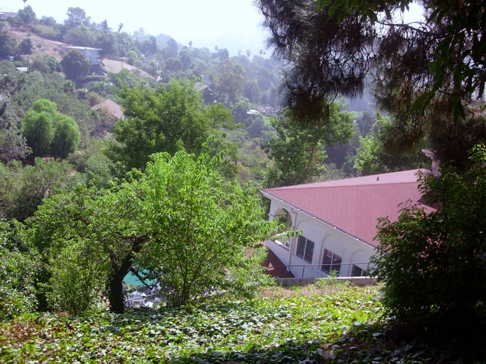
Hermitage and canyon - Mother Center. There was a plan to move Guruji's crypt here, but the Mt. Washington resident's association put up a fight over the construction (LA is overbuilt!) and potential for extra traffic on the narrow mountain roads. In the interest of amity, SRF eventually shelved the plan.

Tennis Court and Sundial - Mother Center Grounds

Buses in front of Bonaventure Hotel leaving for pilgrimage sites
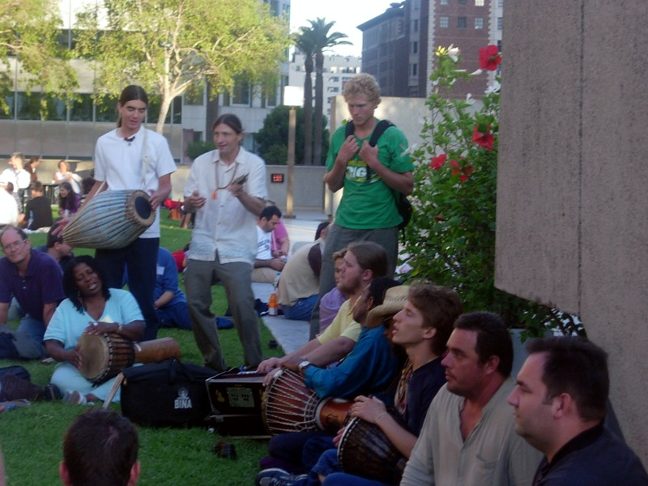
Bolo - group of Encinitas devotees

Fountain in the Biltmore lobby. This was formerly the music room where Guruji entered mahasamadhi. You can see some of the stonework around the fountain on pictures from that event. Each year they announce that the Biltmore asks you not to meditate in the lobby!

Interior of Biltmore, where Convocation was held until the mid 80s when we outgrew it. Gold leaf and painted ceilings.

Fullerton temple

Brother Nakulananda after the service